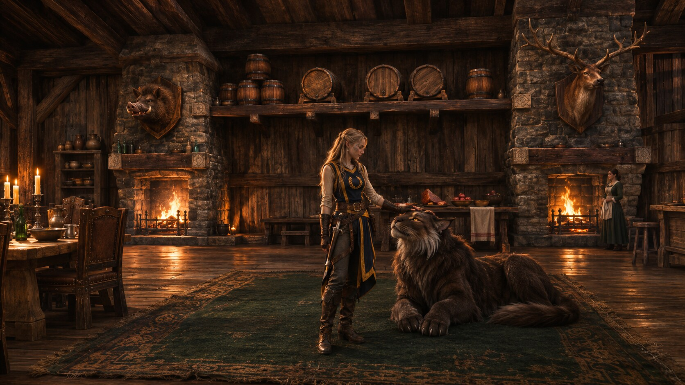

I left Southshore with yesterday’s errands still on my mind. At Booty Bay I settled my business with Captain Aransas, then went back to the Rebel Camp and turned in the work Brother Nimetz had sent me to do. That brought me to level forty. By the time I returned to Southshore with the camp’s report for Loremaster Dibbs, I’d learned Bestial Wrath. I had a new trick of my own. It seemed only fair to spend the morning finding a few for Sylthara.
That took me through the Dragonmurk in Dustwallow, where there are enough dragon whelps to make a woman reconsider looking up first, as I usually do. I found a stronger Bite there. In the Swamp of Sorrows, I worked through the Shifting Mire and out to Misty Reed Strand for Dash and Claw. By the time I reached Apocryphan’s Rest in the Badlands, I was glad to have dry ground underfoot. I came away with Prowl and a better Dash. Later, when Sylthara was ready, we worked through all four. I’ve been learning how to read tracks since I left Zephras. She’s getting very good at leaving me none to read.
The Riverglades kept us busy the rest of the day. I brought Halligan Turner his stolen saw blades and carried the field marshal’s log back to Demar Brant. Sunnyglade used to be a prosperous town. Now the Twilight’s Hammer hold ground among the ruins, and Farholde still stands where the knights made a refuge after the road home was cut off. I brought Ashe Amberhall pages and charms from Sunnyglade. It felt strange to lay those little things on a table in a keep that owed its existence to people getting out of that same town alive. Somewhere between those turn-ins and taking on the next errand, I reached forty-one.
Terral’s Watch sent me after the Rog’mar poachers. I did well enough there to get careless about how much farther I went. A Rog’mar grunt put an end to that, and Sylthara went down there too. I’d spent half the morning improving her chances in a fight. I ought to spend a little more time improving my sense of when to leave one.
We got back on our feet. I took a detour to Powderfuse Port, where Sleebo Fizzlespout had me bottle marsh gas and test his contraption. Then I took Trapclaw’s pincer back to Fimbo and went back to finish the work near Rog’mar. This time I came away with the supplies and Blademaster Kaijo’s banner. Cornelius gave me his report for Demar Brant, who put an Orc Bone Bow in my hands when I delivered it. I brought Bertrand his timber, too. A keep needs wood even on a day when nearly everyone you talk to wants something done with a bow.
Tonight we’re at the Elk’s Horn Inn in Farholde. There’s a fire, and Sylthara’s close enough that I can see her ears turn whenever somebody crosses the room. I still want my own bed in Goldshire. For tonight, I’m glad there’s room by the fire for both of us.